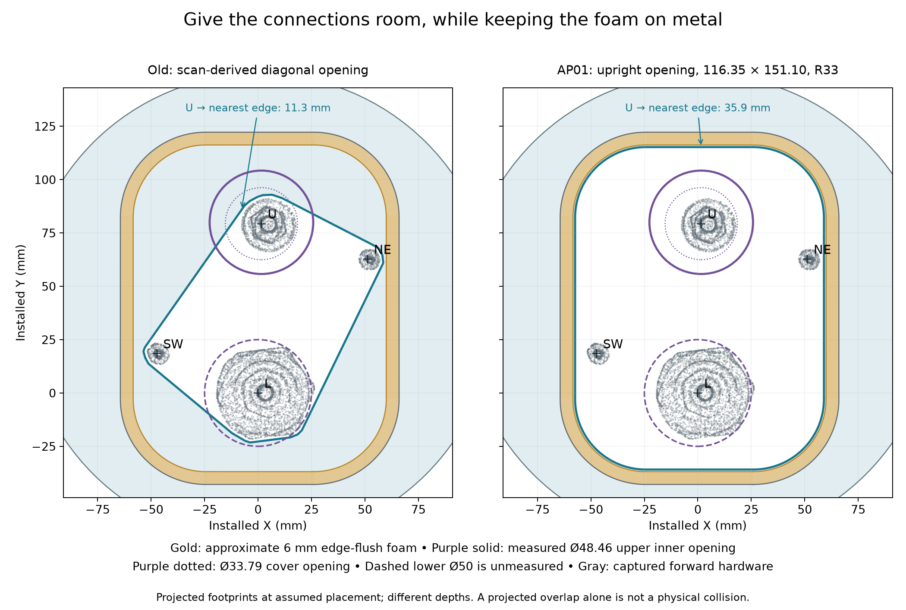
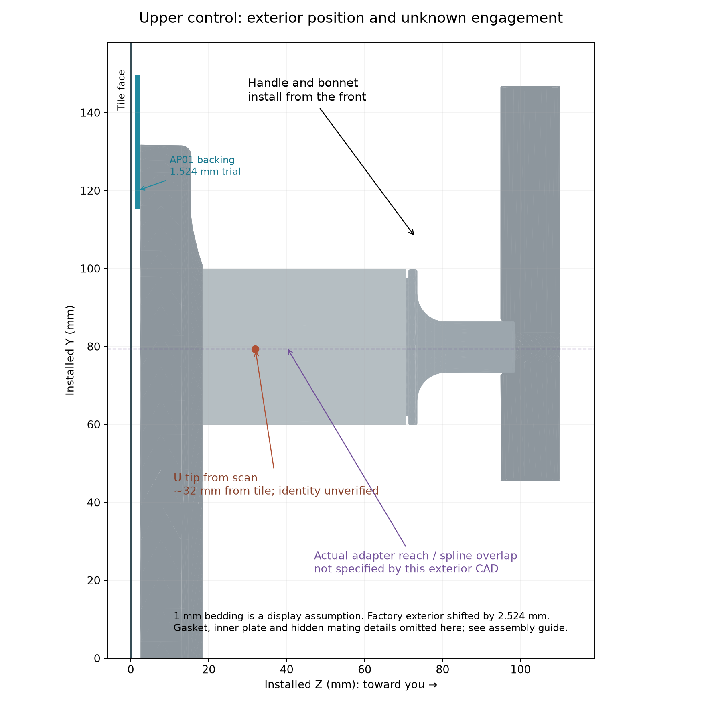

Correction: the stored U/L points are not verified shaft centers
The off-center appearance is real in the reconstruction. Both original landmarks sit near the left edge of the captured tip caps. A separate cap-outline fit places the apparent centers about 3.1–3.4 mm farther right. This is a scan-based diagnostic, not a measured alignment correction.
 Purple circles: inner-plate openings, not knob diameters. Upper Ø48.46 is measured; lower Ø50 remains assumed. Black ×: original surface pick. Blue +: provisional tip-cap center. Circles and CAD have not been moved to force a match.
Purple circles: inner-plate openings, not knob diameters. Upper Ø48.46 is measured; lower Ø50 remains assumed. Black ×: original surface pick. Blue +: provisional tip-cap center. Circles and CAD have not been moved to force a match.
Your observation that the knobs look about as wide as the inner-plate openings is retained qualitatively; no knob diameter has been accepted. Where a part actually crosses an opening at the same depth, the radial allowance is (opening diameter − passing-part diameter) / 2, and center offset consumes that allowance. Similar diameters can therefore leave very little freedom for misalignment. The critical rear profile must be identified; the visible knob diameter alone does not establish what passes through each plane.
Fit remains unresolved in both centering and depth. L's reference circle was centered on the old pick by construction. U's reference-circle center is 0.647 mm above its old pick. Those small coordinate differences do not establish physical concentricity. The new cap fit suggests roughly 3.2–3.3 mm offsets from the displayed circles.
A real assembly needs each stem, adapter and handle mating axis aligned. The rigid factory plate must register to both controls and studs together. Moving the plate alone could lose the current nominal 1 mm foam-side land; moving the whole trim/backing arrangement would require fresh wall-coverage and diverter-spacing checks. Do not turn this discrepancy into a machining tolerance or independently move the two factory holes.
The custom backing has one large upright aperture. Its existing geometric clearance results apply to the old provisional placement only. The small circles are factory-opening references, not additional holes in the custom cutting files. Actual centering, rear connection clearance and axial engagement require the real factory parts and a thickness-correct dry fit.
Recomputed offsets, cap-fit sensitivity and limitations · Kohler assembly sequence, pp. 7–8
← Paired circular plate reviewRoom for the connections, then a real engagement check
The whole knob installs from the front. The custom backing opening must clear the hardware and any rearward-reaching connection parts; the added thickness must also let both handles engage and fasten properly.
AP01 is the recommended next dry-fit shape. Its upright opening improves access around U and L. Physical handle engagement, gasket support, retention and sealing are still unverified. Earlier CB01 quote files contain the old aperture.
Why the old opening was diagonal
It followed the convex outline of selected forward scan surfaces, including the diagonal studs, with a 1.75 mm offset. That produced a compact hardware insertion envelope. It was not a factory-required contour and did not validate the missing adapters or handle attachment.

U and L are provisional original surface picks, not verified shaft axes; see the ALIGN01 correction above. Measured opening footprints are projected at provisional reference placements. Parts occupy different depths: an XY overlap alone is not a proven collision.
U to the nearest aperture edge: 11.3 mm before, 35.9 mm in AP01. The entire measured Ø48.46 upper inner-opening footprint fits inside AP01 at the current reference placement, with about 11.0 mm minimum spare margin. This diameter is an opening measurement, not the adapter or hub outside diameter.
AP01 is 116.35 × 151.10 mm with R33 corners. It contains the complete old buffered opening with a minimum 0.446 mm additional gap. Both main outer circles remain concentric candidates: Ø220 and Ø214.15 mm. No new locating tabs or stud holes have been added.
Captured-surface check: 51,929 forward triangles were clipped and checked again. Neither aperture conflicts with those captured projections. The check excludes the stone-edge mask and cannot establish hidden hardware, scan accuracy or actual fit.
The foam meets the outer plate edge
Your correction is now recorded. The 6 mm-wide foam belongs to the removed inner plate and meets its outer metal edge. The earlier explanatory drawing incorrectly showed an inset. The F005 CAD foam already used the flush-edge scenario; this observation now supports that outer-edge choice.
The upright trial sits 7 mm inside the assumed metal outline. A uniform 6 mm band therefore leaves 1 mm nominal extra land between the aperture and foam. That remainder is not an accepted tolerance: the R40 corners, local minimum width, registration and compression need physical checking.
Corrected foam and rear-contact review
The knob does not go through this backing plate

Actual Kohler nominal exterior mesh, positioned for the 1.524 mm plate + 1 mm assumed bedding trial. It does not contain authoritative hidden spline/thread geometry. Inner plate and gasket are omitted from this view for clarity; they remain required.
Kohler's guide, pages 7–8, places adapters on the stems and secures the decorative cover through handle assemblies attached to the inner-plate hubs. The adapter must be the appropriate length for engagement and cover seating.
The aperture addresses side clearance. The depth stack addresses reach. A 1.524 mm plate plus 1 mm assumed bedding moves the factory seating plane outward by 2.524 mm; the 3.175 mm sheet makes that 4.175 mm. Actual bedding and compression may change those numbers. No known spline-overlap margin can currently be subtracted from them.
The previous upper-stem rough-in warning also remains open: the scan tip is about 32 mm beyond tile, roughly 5 mm beyond the nominal bare-upper-tip range if it is the same bare feature and the scan scale is correct. That is a check to resolve, not a confirmed installation defect or an allowable 5 mm tolerance.
What will establish handle fit
- Slide the thickness-correct backing mockup over the exposed hardware without contact.
- Following the factory sequence, seat and secure the correct adapters, then fit the real foam/inner plate and nuts; confirm a continuous landing.
- Fit the decorative cover and fasten both handles by their intended interfaces. Confirm they engage without bottoming, slipping or using screw force to pull a mismatch together.
- Check the full intended handle motion, cover drainage and later removal. Record thickness, bedding and each result.
These checks are still unperformed. Paper checks alignment only.
Wood contact is now confirmed by you
The rods meet the wood surface. Clearance holes in that wood are your preferred, authorized approach if inward trim-stud adjustment is needed and the other depth checks pass.
That would permit the rods to retract through their valve threads. It would not move U, L or the valve body. Required travel, retained thread engagement, wood role and clear drilling path determine the eventual relief dimensions; no pocket size is prescribed here.
AP01 / October 15, 2026. Numeric R005 measurements, original scan and registration preserved. No physical adjustment, drilling, purchase or upload performed.